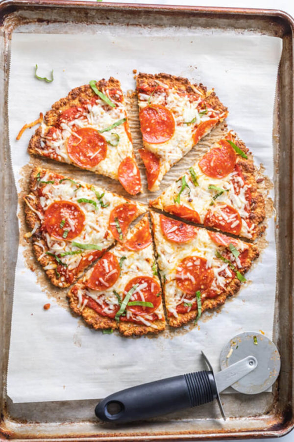

Cauliflower Crust Pizza

Cauliflower Crust Pizza
Cauliflower crust pizza is a great low-carb pizza option. You can make it dairy free as well and add as many toppings as you want.
Ingredients:
- 1 bag of riced cauliflower
- 3 large eggs
- 3/4 cup shredded mozerella cheese
- 1/4 cup of grated parmesan cheese
- 1/2 teaspoon garlic powder
- 1/2 teaspoon dried oregano
- 1/4 teapoon of salt
- Freshly ground black pepper
- 1/2 cup pizza sauce
- Toppings - for example - pepperoni and garlic
Instructions:
- Thaw riced cauliflower and press with paper towels to get rid of moisture.
- In a bowl, mix cauliflower, mozerella, parmesan, salt, pepper, garlic powder, and oregano.
- Lightly beat eggs and add them to the cauliflower mixture.
- Spread the mixture on a baking pan until completely flat and even and bake at 400 degrees F for 25 minutes.
- Remove crust from oven and add pizza sauce, cheese, and toppings. Bake for an additional 10 minutes and enjoy!